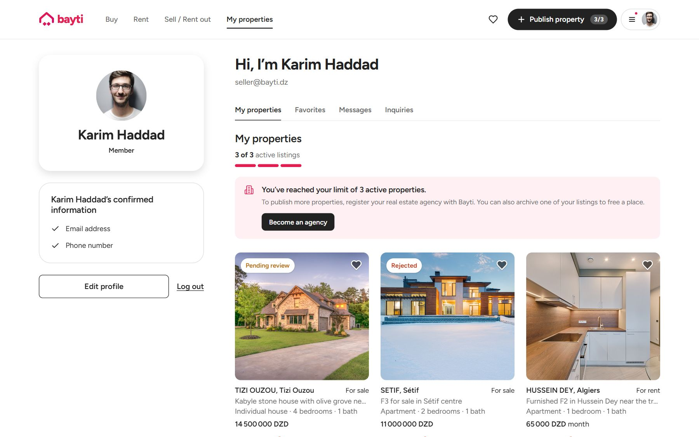
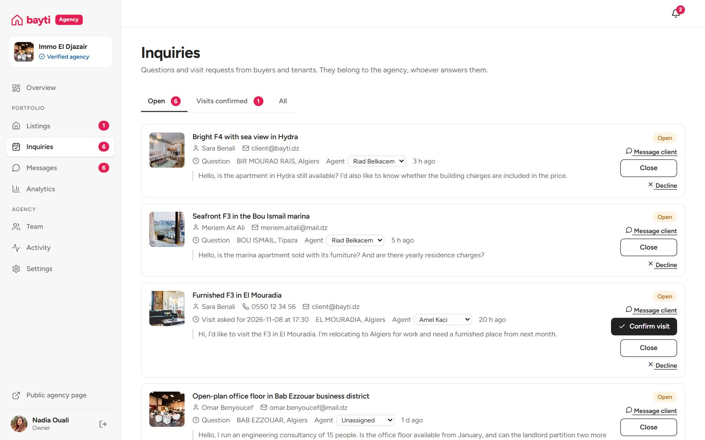
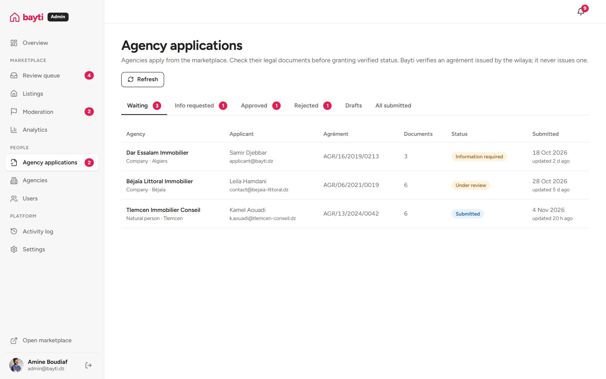

Bayti, a real-estate marketplace for Algeria
Owners and agencies list homes, people search by region and budget, and a small team checks every agency and listing before it goes live.
- BeforeOwners, agencies and reposted ads all looked the same
- NeededKnowing who is really behind a listing
- BuiltVerified agencies, reviewed listings, 4 roles
- NowLive demo, every role works
Problem
On property sites, a private owner, a licensed agency and someone reposting ads all look the same.
My role
Designed the roles, permissions and data model, and built the product end to end.
Outcome
Live demoEvery role works. Switch between them with the panel at the bottom left. Password: demo1234
Goal
Build a property marketplace where a home seeker can tell who is behind a listing and trust that it is real.
What was wrong with existing sites
On general classifieds sites, anyone can post a property. A buyer can't tell a real owner from an agent or from someone reposting old ads, the same home shows up several times at different prices, and nothing confirms that an "agency" is licensed.
One product, four ways in




Decisions and trade-offs
- Cap private sellers at three active listingsSomeone with many listings is working as an agent. At the limit they can archive one or apply as an agency, where their licence gets checked.A genuine owner with four properties hits the limit too. Three is enough for a family renting or selling a few homes, and low enough to catch people running an agency without a licence.
- Verify agencies against their state licenceAgencies upload their licence number and business registration, and a person reviews them. The verified badge only means something if it points to a real licence.Manual review slows agency sign-up and needs staff time that a growing marketplace has to pay for.
- Review every listing before it is publicDuplicates, wrong prices and misleading photos hurt a young marketplace more than a small catalogue. New listings stay hidden until the team publishes them.Fewer listings, and a delay before sellers see theirs live. I chose trust over volume.
- Make it reviewable in thirty secondsThe demo ships with sample data and a role switcher, so anyone can try every role without registering.
What I'd do differently
I'd test the rules with real sellers and agents before building them. The three-listing cap and the review step are reasonable guesses, but guesses all the same.
With real users, the first things I'd measure are how long reviews take and how many sellers hit the listing cap.